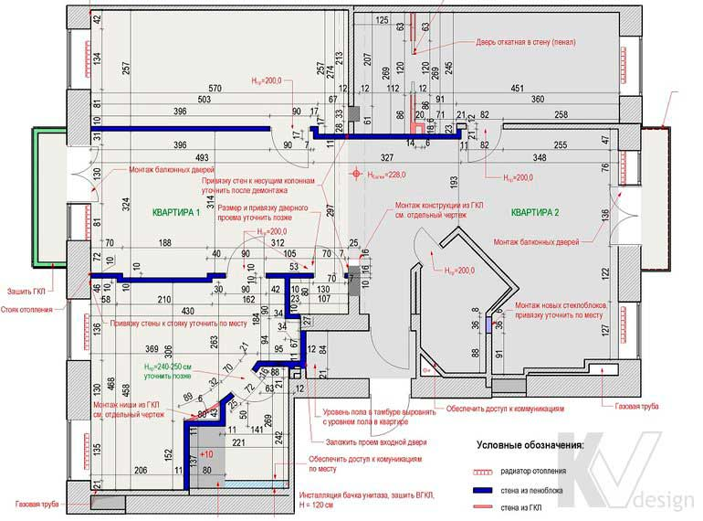

План монтажа стен и перегородок

Це креслення включає всю інформацію про споруджуваних стінах - їх розташування, матеріали, прив'язка до зовнішніх стін приміщень та один до одного - а також дані про висоту дверних прорізів і декоративних перегородок, вертикальні розгортки з розмірами для подіумів і створюваних ніш. Саме на базі плану монтажу розраховується кількість будівельних матеріалів і кошторис на початкову стадію ремонту. При необхідності в креслення вносяться нагадування про заміну віконних і дверних блоків, радіаторів опалення. Червоним кольором виділяються примітки за специфікою і рішенням для конкретного об'єкта, на які будівельникам необхідно звернути особливу увагу.